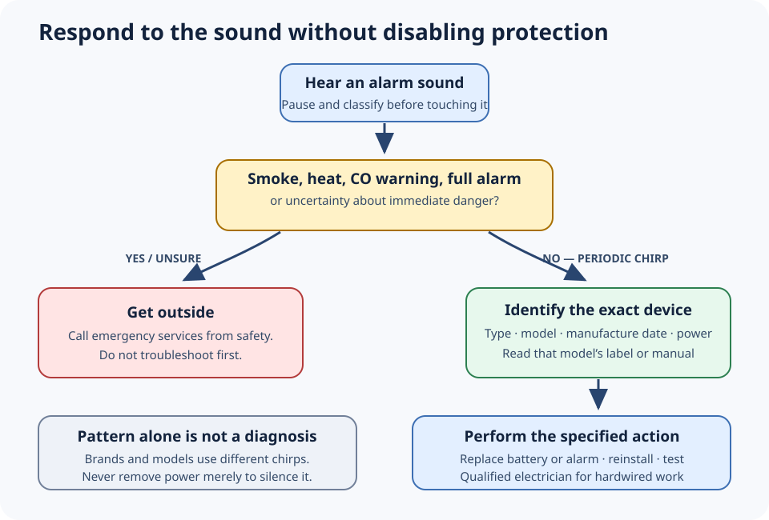

01 · Safety boundary
Leave before troubleshooting danger
Get outside first if there is smoke or heat, the device announces carbon monoxide, a full alarm sounds, or you are unsure whether danger is present. Call emergency services from a safe place. Do not stay to identify a pattern.

Text equivalent: possible danger or uncertainty leads outside. A clearly periodic maintenance chirp leads to the exact device label and manual, then the specified battery or whole-alarm replacement, reinstallation and testing.
02 · Mechanism
A chirp reports the alarm’s own state
Smoke alarms monitor more than smoke. Depending on the model, a periodic chirp can report a weak replaceable battery, an expired sealed unit, a malfunction, an incomplete battery connection or a temporary hush state. Manufacturers assign different timing, light and voice patterns, so counting chirps is useful only after identifying the model.
Device type
Smoke, carbon-monoxide and combination alarms can use different alert patterns.
Power type
Replaceable battery, sealed long-life battery, or hardwired power with a backup battery changes the maintenance action.
Age and model
The label and manual establish replacement age, approved batteries and the meaning of status signals.
03 · Worked example
A sealed alarm made in May 2016
| Observation | What it changes |
|---|---|
| Periodic chirp; no smoke, heat, CO message or full alarm | Proceed to identification while staying alert for danger. |
| Label says smoke alarm, sealed battery, manufactured May 2016 | There is no user-replaceable battery to hunt for. |
| Inspection date is November 2026 | The invented unit is 10 years and 6 months old. |
| USFA says replace smoke alarms 10 years from manufacture | Replace the whole alarm according to its instructions; a manual may require earlier replacement. |
04 · Failure modes
Four shortcuts that remove protection
- Pulling a battery to stop noise: silence is not a repair.
- Trusting a generic chirp chart: the exact model controls the code.
- Replacing the wrong part: sealed units and expired alarms require whole-unit action.
- Opening hardwired wiring: USFA directs hardwired installation to qualified electricians.
Field wisdom: restore the alarm to its mounted, powered state and run the manufacturer’s test. If it does not pass, contact the maker, a qualified electrician or your local fire department’s nonemergency service.
05 · Practice
Make a 15-minute alarm card
- Choose one alarm you can inspect without unsafe climbing. Do not disconnect hardwired wiring.
- Record its room, device type, model, manufacture or replacement date, and power type. Stop and get help if the label is not safely reachable.
- Find the manufacturer’s manual and write its maintenance signal, required action and test procedure. Schedule the next monthly test.
Success: another household member can identify the same device and follow its source-specific instructions without disabling it.
Knowledge check
- What observation sends you outside before any diagnosis?
- Why is “one chirp per minute” not a complete diagnosis?
- What closes the maintenance loop?
Reveal answer guidance
- Smoke, heat, a CO message, a full alarm or uncertainty about danger.
- Sound codes vary by device type, brand and model.
- Use the exact manual, perform the specified action, reinstall the alarm and confirm its test passes.
06 · Next steps
Use the label, then the source
USFA’s smoke-alarm guide covers placement, power types, testing and replacement age. CPSC’s maintenance reminder reinforces monthly tests and manufacturer instructions. Claim mapping is in the source ledger.